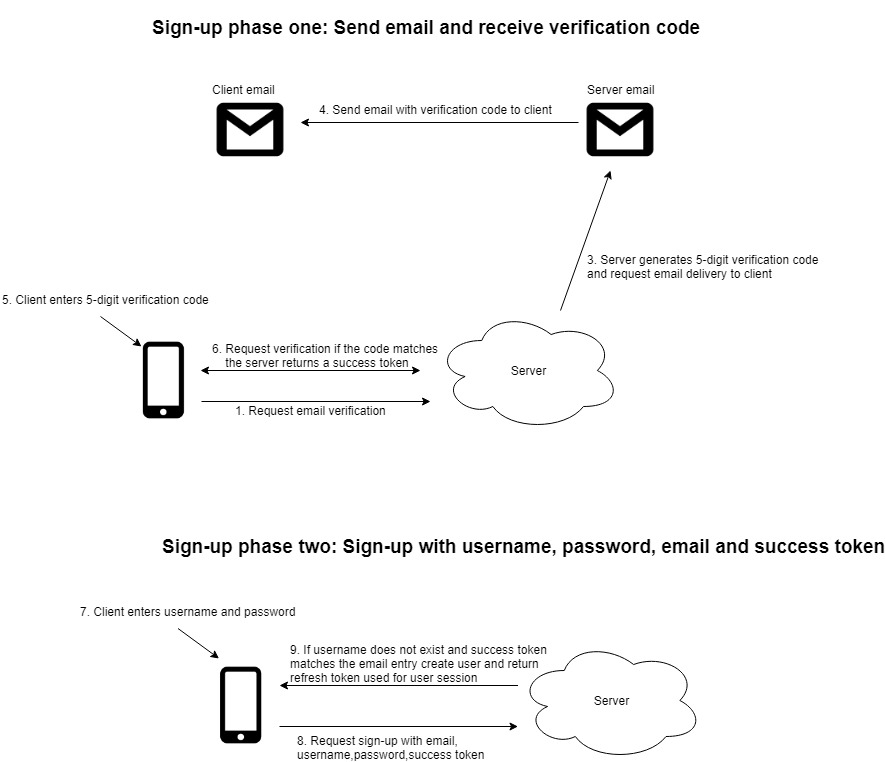
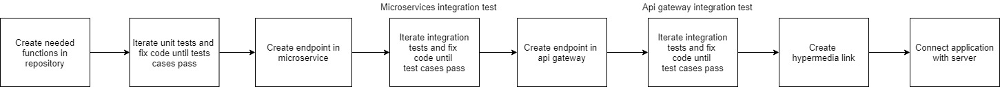

Business Info/Promotion App (Google Play)
Introduction
My friend and I built Android application where users can open up shops and place a marker on the map to promote there buisiness locally.
Users can interact with shops owners using a built in instant messaging and search up items using the search bar(supports elastic search)
or "infinite" product scrolling. More details availiable at
Google Play.
Backend
Introduction
The backend was bulit using Node.js Docker containers following a microservice design pattern.

Api-gateway
Functionality
- Most app requests are made to the api-gateway which routes requests to the appropriate microservices
- Handles basic User Authentication such as checking JWT for tasks that require permission
- Maintains data consistancy across services
Some app requests incorporate many services and to achieve modulation services do not communicate with each other.
As a result, the api-gateway schedules requests to multiple services however a request to a certain service may fail and to maintain
data consistancy previous requests must be reverted by the api-gateway.
For example, when a user requests for sign-up the api-gateway:
1.Request to auth-service to create user
2.Request to user-service to create user profile
3.Request to chat-service to generate xmpp account
However, if any of these steps fail to achieve atomicity transactions must be reverted. The api-gateway uses a
“saga state machine” to achieve such goal and maintain data consistency over distributed services.
For the above example if transaction #3 fails the saga state machine reverts transaction #2 and #1.

Auth-service
Functionality
- 1.Stores usernames and hashed passwords using the node.js Bcrypt library
- 2.Sends out emails with verification codes to users upon sign-up and handles the process

- 3.Verifies OAuth tokens and grants refresh token and access token

Functionality
Has access to the MySQL database connected to ejabberd-service(XMPP) which allows custom http requests that
the ejabberd framework does not support. For example, unread messages and dialogs lists cannot be synced among
multiple devices however adding the chat service makes such features possible. Also,
this service handles are push notifications when users are offline.
Functionality
A xmpp framework used to add instant messaging in the app. Enabled features are:
User-service
Stores data of user such as profile image, shop ownership, name
Image-service
Stores image files and checks permissions of a request if image is private. Images names are stored using a MD5 hashes.
Shop-service
Stores data of shops and products in shops
Map-service
Stores data of shop markers on the map. The markers are stored and queried using mongo’s geospatial queries.
General development pipeline using continuous integration
